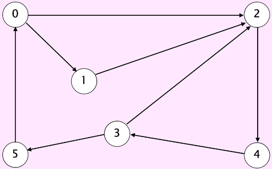

Graphs : Breadth-First Search
Contents
Graphs : Breadth-First Search#
Breadth-first search (BFS) is a graph traversal algorithm that visits all the vertices in a graph in level order, exploring all the vertices at a given distance from the starting vertex before moving on to vertices at a greater distance. BFS starts at a specified vertex (the starting vertex) and visits all its neighbors before visiting the neighbors of its neighbors, and so on.
BFS uses a queue data structure to keep track of the vertices that have been visited but not yet processed. The starting vertex is added to the queue, and then while the queue is not empty, the algorithm removes the first vertex from the queue, visits its neighbors, and adds them to the queue if they have not already been visited.
BFS can be used to perform a variety of operations on a graph, such as finding the shortest path between two vertices, checking whether the graph is connected, and identifying cycles in the graph.
BFS can be implemented using an iterative approach with a queue data structure, which is more memory-efficient than the recursive approach used in DFS.
Overall, BFS is an important algorithm in graph theory and is widely used in many applications, such as network analysis, data mining, and artificial intelligence.
Breadth-first (in digraphs)#
- Problem#
Find directed path from \(s\) to each other vertex that uses the fewest edges
- Key idea#
Visit vertices in increasing order of distance from \(s\)
Click below to enter your path…
directed paths from \(0\) to \(6\)
shortest path from \(0\) to \(6\ (length = 4)\)
- Key idea#
Visit vertices in increasing order of distance from \(s\)
- Key data structure#
Queue of vertices to visit
- Repeat until queue is empty#
Remove vertex \(v\) from queue
Add to queue all unmarked vertices adjacent from \(v\) and mark them
BFS (from source s)
-----------------------------------------------
Add s to FIFO queue and mark s
Repeat until the queue is marked empty:
- remove the least recently added vertex
- for each unmarked vertex w adjacent from v:
- add w to queue and mark w

Fig. 83 graph g#
Fig 58
\(v\) |
\(edgeTo[]\) |
\(marked[]\) |
\(distTo[]\) |
|---|---|---|---|
0 |
- |
T |
0 |
1 |
0 |
T |
1 |
2 |
0 |
T |
1 |
4 |
2 |
T |
2 |
3 |
4 |
T |
3 |
5 |
3 |
T |
4 |
Single-sink Shortest Paths
Given a digraph and a target vertex \(t\), find shortest path from every vertex to \(t\)
Shortest path from \(7\)
\(7 \rightarrow 6 \rightarrow 0\)
Shortest path from \(5\)
\(5 \rightarrow 4 \rightarrow 2 \rightarrow 0\)
Shortest path from \(12\)
\(12 \rightarrow 9 \rightarrow 11 \rightarrow 4 \rightarrow 2 \rightarrow 0\)
Multiple-source Shortest Paths
Given a digraph and a set of source vertices, find shortest path from any vertex in the set to every other vertex
Shortest path to \(4\)
\(7 \rightarrow 6 \rightarrow 4\)
Shortest path to \(5\)
\(7 \rightarrow 6 \rightarrow 0 \rightarrow 5\)
Shortest path to \(12\)
\(10 \rightarrow 12\)
Breadth-first Search (in graphs)#
Fewest number of hops in a communication network

Fig. 86 ARPANET 1969 - 1977#
- Problem#
Find path between \(s\) and each other vertex that uses fewest edges
- Solution#
Treat as a digraph, replacing each undirected edge with two antiparallel edges
BFS (from source s)
-----------------------------------------------
Add s to FIFO queue and mark s
Repeat until the queue is empty:
- remove the least recently added vertex v
- for each unmarked vertex w adjacent from v:
- add w to queue and mark w
Summary#
Graph traversal#
graph problem |
BFS |
DFS |
time |
|---|---|---|---|
s-t path |
✔︎ |
✔︎ |
E + V |
shortest s-t path |
✔︎ |
E + V |
|
shortest directed cycle |
✔︎ |
E V |
|
Euler cycle |
✔︎ |
E + V |
|
Hamilton cycle |
\(2^{1.657 V}\) |
||
bipartiteness |
✔︎ |
✔︎ |
E + V |
connected components |
✔︎ |
✔︎ |
E + V |
strong conmponents |
✔︎ |
E + V |
|
planarity |
✔︎ |
E + V |
|
graph morphism |
\(2^{c\ ln^{3}\ V}\) |